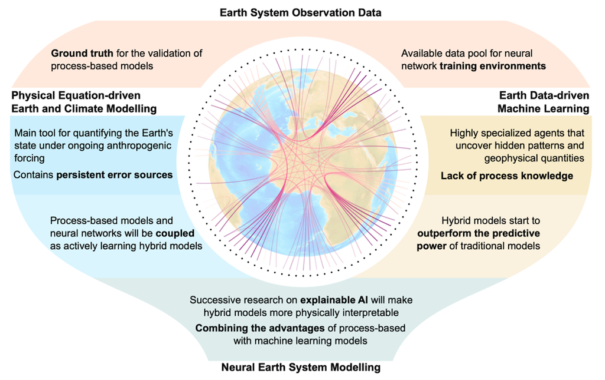

3 Process-based IAMs
Wilson Abstract
Process-based integrated assessment models (IAMs) project long-term transformation path- ways in energy and land-use systems under what-if assumptions. IAM evaluation is necessary to improve the models’ usefulness as scientific tools applicable in the complex and contested domain of climate change mitigation. We contribute the first comprehensive synthesis of process-based IAM evaluation research, drawing on a wide range of examples across six different evaluation methods including historical simulations, stylised facts, and model diag- nostics. For each evaluation method, we identify progress and milestones to date, and draw out lessons learnt as well as challenges remaining. We find that each evaluation method has distinctive strengths, as well as constraints on its application. We use these insights to propose a systematic evaluation framework combining multiple methods to establish the appropriate- ness, interpretability, credibility, and relevance of process-based IAMs as useful scientific tools for informing climate policy. We also set out a programme of evaluation research to be mainstreamed both within and outside the IAM community.
Wilson Memo
Process-based IAMs have also been criticised for a range of perceived failings, including technological hubris, omitted drivers of sociotechnical change, and understating future uncertainties.
We contribute the first synthesis of IAM evaluation research, drawing on a wide range of examples across six different evaluation methods: historical simulations, near- term observations, stylised facts, model hierarchies from simple to complex, model inter- comparison projects (including diagnostic indicators), and sensitivity analysis. For each method, we review key milestones in historical development and application, and draw out lessons learnt as well as remaining challenges.
We also propose four criteria against which evaluation can help improve IAMs and their usefulness in policy contexts: appropriateness, interpretability, credibility, and relevance. We map each evaluation method onto these criteria, and conclude by arguing for a systematic evaluation framework which combines the strengths of multiple methods to overcome the limitations of any single method.
Process-based IAMs not benefit-cost models
We use ‘IAMs’ to mean process-based integrated assessment models (or what Weyant (2017) calls ‘detailed process’ or DP IAMs). These IAMs:
Represent explicitly the drivers and processes of change in global energy and land-use systems linked to the broader economy, often with a high degree of technological resolution in the energy supply
Capture both biophysical and socioeconomic processes including human preferences, but do not generally include future impacts or damages of climate change on these processes
Project cost-effective ‘optimal’ mitigation pathways under what-if assumptions or subject to pre-defined outcomes such as limiting global warming to 2 °C.
Many process-based IAMs originate in energy system models or energy-economy models which have since integrated land use, greenhouse gas emissions, and other climate-related processes.
Wilson (2021) Evaluating process-based integrated assessment models of climate change mitigation (pdf)
3.1 The costs of “costless” climate mitigation
Kotchen
By holding to the position that there’s no such thing as a free lunch, economists may be overestimating the true cost of mitigation. This could occur in top-down models because of failure to recognize that inefficient decision-making exists for individuals, industry, and governments, meaning that there are opportunities to reduce GHG emissions while lowering costs—a so-called “win-win.” The question is how pervasive are such opportunities. Whereas the economics IAMs assume there are none, the IPCC asserts that win-wins can account for up to 16% of emission reductions in 2030. The IPCC estimate omits a whole category of difficult-to-quantify nonmonetary costs.
Different starting points on costless mitigation explain the vast majority of the divergence in the IPCC’s bottom-up estimates and top-down economic approaches.
We consider comparisons to six other IAMs often called “process-based” models because they focus more on bottom-up integration of energy and biophysical systems rather than on benefit-cost analysis. The models that we consider are also used in different portions of the IPCC analysis. We find that these models are more closely aligned with the bottom-up estimates than the benefit-cost IAMs with regard to mitigation potentials and the treatment of costless mitigation. This finding is important because whereas the IPCC’s bottom-up analysis acknowledges omission of indirect, nonmonetary costs, the same qualification is typically not associated with policy analysis coming out of the process-based models.
Kotchen (2023) The costs of “costless” climate mitigation (pdf) Kotchen (2023) SM (pdf)
3.2 AI in Climate Research
Irrgang Abstract
Earth system models (ESMs) are our main tools for quantifying the physical state of the Earth and predicting how it might change in the future under ongoing anthropogenic forcing. In recent years, however, artificial intelligence (AI) methods have been increasingly used to augment or even replace classical ESM tasks, raising hopes that AI could solve some of the grand challenges of climate science. In this Perspective we survey the recent achievements and limitations of both process-based models and AI in Earth system and climate research, and propose a methodological transformation in which deep neural networks and ESMs are dismantled as individual approaches and reassembled as learning, self-validating and interpretable ESM–network hybrids. Following this path, we coin the term neural Earth system modelling. We examine the concurrent potential and pitfalls of neural Earth system modelling and discuss the open question of whether AI can bolster ESMs or even ultimately render them obsolete.
CarbonBrief
A new line of climate research is emerging that aims to complement and extend the use of observations and climate models. We propose an approach whereby machine learning and climate models are not used as individual tools, but rather as connected “hybrids” that are capable of adaptive evolution and self-validation, while still being able to be interpreted by humans.
Climate models have seen continuous improvement over recent decades. The most recent developments have seen the incorporation of biogeochemical cycles – the transfer of chemicals between living things and their environment – and how they interact with the climate system. Adding in new processes and greater detail have resulted in more sophisticated simulations of the Earth’s climate, it comes at the cost of increasingly large and complex models.
ESMs are built on equations that represent the processes and interactions that drive the Earth’s climate. Some of these processes can be described by fundamental laws – such as the Navier-Stokes equations of fluid motion, which capture the speed, pressure, temperature and density of the gases in the atmosphere and the water in the ocean. However, others – such as physiological processes governing the vegetation that covers vast parts of the land surface – cannot and instead require approximations based on observations.
These approximations – as well as other limitations that stem from the sheer complexity of the Earth system – introduce uncertainties into the model’s representation of the climate.
As a result, despite the tremendous success of ESMs, some limitations remain – such as how well models capture the severity and frequency of extreme events, and abrupt changes and “tipping points”.
In contrast to ESMs, machine learning does not require prior knowledge about the governing laws and relations within a problem. The respective relations are derived entirely from the data used during an automated learning process. This flexible and powerful concept can be expanded to almost any level of complexity.
The availability of observed climate data and model simulations in combination with ready-to-use machine learning tools – such as TensorFlow and Keras – have led to an explosion of machine learning studies in Earth and climate sciences. These have explored how machine learning can be applied to enhance or even replace classical ESM tasks.
Despite wordings like “learning” and “artificial intelligence”, today’s machine learning applications in this field are far from intelligent and lack actual process knowledge. More accurately, they are highly specialised algorithms that are trained to solve very specific problems solely based on the problem-related presented data.
Consequently, machine learning is often considered a black box that makes it hard to gather insights from. Similarly, it is often very difficult to validate machine learning in terms of physical consistency, even if their generated outputs may seem plausible.
Many of today’s machine learning applications for climate sciences are proof-of-concept studies that work in a simplified environment – for example, with a spatial resolution much lower than in state-of-the-art ESMs or with a reduced number of physical variables. Thus, it remains to be seen how well machine learning can be scaled up to operational and reliable usage.
Initially, machine learning in climate research was primarily used for automated analysis of patterns and relations in Earth observations. However, more recently, it has been increasingly targeted towards ESMs – for example, by taking over or correcting specific model components or by accelerating computationally demanding numerical simulations.
This development has led to the concept of “hybrids” of ESMs and machine learning, which aim to combine their respective methodological advantages while minimising their limitations. For instance, the hybrid concept has been explored for analysing continental hydrology.
Continuing this line of research will increasingly blend the so-far still strict line between process-based models and machine learning approaches.

Figure: Illustration of the stages of bringing ESMs and machine learning together towards neural Earth system modelling. The left and right branches visualise the current efforts and goals for building weakly coupled hybrids (blue and yellow), which converge towards strongly coupled hybrids.
Within machine learning, making a correct prediction for the wrong reasons can be termed taking a “shortcut”, or having a system description that is “underdetermined”. Taking shortcuts is increasingly likely within climate science because the data available to us from the observational record is short and biased towards recent decades.
3.3 Climate Catastrophe
3.3.1 Endgame
Kemp Abstract
Prudent risk management requires consideration of bad-to-worst-case scenarios. Yet, for climate change, suchpotential futures are poorly understood. Could anthropo-genic climate change result in worldwide societal collapseor even eventual human extinction? At present, this is adangerously underexplored topic. Yet there are amplereasons to suspect that climate change could result in aglobal catastrophe. Analyzing the mechanisms for theseextreme consequences could help galvanize action, improveresilience, and inform policy, including emergency respon-ses. We outline current knowledge about the likelihood ofextreme climate change, discuss why understanding bad-to-worst cases is vital, articulate reasons for concern about cat-astrophic outcomes, define key terms, and put forward aresearch agenda. The proposed agenda covers four mainquestions: 1) What is the potential for climate change todrive mass extinction events? 2) What are the mechanismsthat could result in human mass mortality and morbidity? 3)What are human societies’ vulnerabilities to climate-triggered risk cascades, such as from conflict, political insta-bility, and systemicfinancial risk? 4) How can these multiplestrands of evidence—together with other global dangers—be usefully synthesized into an“integrated catastropheassessment”?Itistimeforthescientific community to grap-ple with the challenge of better understanding catastrophicclimate change.
Kemp (2022) Climate Endgame: Exploring catastrophic climatechange scenarios (pdf)
3.4 Goal Index
In economic modelling choice of goal index (utility) function matters. Daniel 20181 presents this figure:

Fig. Optimal CO2-prices with increasing risk aversion for EZ vs CRRA utility specification. (From Daniel 2018)
As one of the co-authors explain: ‘We where not able to get the Social Cost of Carbon (SCC) under $120’. That is for ‘reasonable risk aversion’, using EZ-utilities. The ‘standard’ specification - with CRRA - utilities ends up with SCC of $20 or below.
\[V_1 = A [\tilde{C\_t}, \mu_t(V\_{t+1})]\]
Specification of the Goal Index function may seem a trivial technical issue - no so! There exists a broad professional litterature and profound discussions on this matter - which might de difficult to dis-entangle.
Let us begin with Frank Ramsey’s growth model from 1928, commonly known as the Ramsey-Cass-Koopmans model.
\(F(K,L)\) is an aggregate production function with factors \(K\) (Capital) and \(L\) (Labour).
3.5 Model Drift
Abstract Sausen
A method is proposed for removing the drift of coupled atmosphere-ocean models, which in the past has often hindered the application of coupled models in climate response and sensitivity experiments. The ocean-atmosphere flux fields exhibit inconsistencies when evaluated separately for the individual sub-systems in independent, uncoupled mode equilibrium climate computations. In order to balance these inconsistencies a constant ocean-atmosphere flux correction field is introduced in the boundary conditions coupling the two sub-systems together. The method ensures that the coupled model operates at the reference climate state for which the individual model subsystems were designed without affecting the dynamical response of the coupled system in climate variability experiments. The method is illustrated for a simple two component box model and an ocean general circulation model coupled to a two layer diagnostic atmospheric model.
Memo Barthel
The coupling of different climate sub-systems poses a number of technical problems. An obvious problem arising from the different time scales is the synchronization or matching of the numerical integration of subsys- tems characterized by widely differing time steps. A more subtle problem is
Model Drift When two general circulation models of the atmosphere and ocean are coupled together in a single model, it is generally found that the cou- pled system gradually drifts into a new climate equilibrium state which is far removed from the observed climate. The coupled model climate equilibrium may be so unrealistic (for example, with respect to sea ice extent, or the oceanic equa- torial current system) that climate response or sensitivity experiments relative to this state be- come meaningless. This occurs regularly even when the individual models have been carefully tested in detailed numerical experiments in the decoupled mode and have been shown to yield satisfactory simulations of the climate of the sepa- rate ocean or atmosphere sub-systems. The drift of the coupled model is clearly a sign that something is amiss with the models. Howev- er, we suggest that it is not necessary to wait with climate response and sensitivity experiments with coupled models unit all causes of model drift have been properly identified and removed. Model drift is, in fact, an extremely sensitive indi- cator of model imperfections. The fact that the equilibrium climate into which a coupled model drifts is unacceptably far removed from the real climate does not necessarily imply that the model dynamics are too unrealistic for the model to be applied for climate response and sensitivity ex- periments. One should therefore devise methods for separating the drift problem from the basically independent problem of determining the change of the simulated climate induced by a change in boundary conditions a n d / o r external forcing (cli- mate response), and from the question of the ef- fect of changes in the physical or numerical for- mulation of the model (model sensitivity).
Flux Correction The separation of the mean climate simulation from the climate response or sensitiv- ity problem can be achieved for coupled models rather simply by an alternative technique, the flux correction method. The errors that result in a drift of the coupled model are compensated in this method by con- stant correction terms in the flux expressions by which the separate sub-system models are cou- pled together. The correction terms have no in- fluence on the dynamics of the system in climate response or sensitivity experiments, but ensure that the “working point” of the model lies close to the climate state for which the individual models were originally tuned. The basic principle of the flux correction method is to couple the atmosphere and the ocean in such a manner that in the unperturbed case each sub- system simulates its own mean climate in the same manner as in the uncoupled mode, but re- sponds fully interactively to the other sub-system in climate response or sensitivity experiments.
Sausen (1988) Coupled Ocean-Atmosphere Model Drift Flux Correction (pdf)
See Links to references↩︎